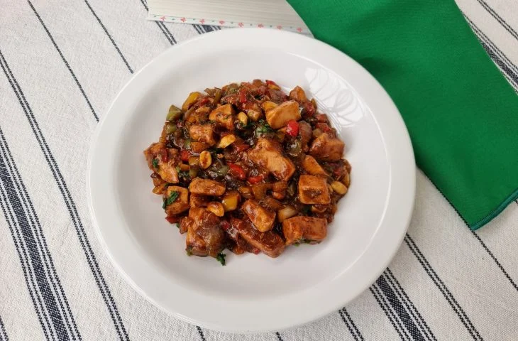

Frango Xadrez
Ingredientes
Frango
Molho
Preparo do frango
- Reúna todos os ingredientes;
- Em um recipiente, coloque o frango já cortado em cubos, tempere com sal (bem pouco, pois vai shoyu na receita), pimenta e vinagre. Misture bem e deixe marinar alguns minutos;
- Esquente um fio de óleo em uma frigideira grande e doure os cubos de frango;
- Adicione os pimentões, a cebola, o alho, o gengibre, o óleo de gergelim, misture e deixe refogar, mexendo por vezes;
- Enquanto o frango refoga, coloque o shoyu em um recipiente, o amido de milho e misture até dissolver bem;
- Acrescente a mistura e a água quente no refogado. Misture bem e deixe apurar por alguns minutos (ou até o molho engrossar);
- Junte o amendoim, misture e desligue o fogo;
- Finalize com a cebolinha verde e sirva. Bom apetite!
- Regue com azeite de oliva e misture cuidadosamente as batatas para envolver todos os pedaços.
- Espalhe os gomos pela assadeira, sem encostar ou sobrepor um no outro para assar inteiro.
- Leve ao forno preaquecido a 200 °C por cerca de 30 a 40 minutos.
- Retire do forno, e sirva quente! Bom apetite.
Preparo do molho
- Em uma vasilha, misture os ingredientes do molho.
- Depois, jogue por cima do frango e dos legumes.
- Deixe ferver e engrossar.
- Salpique cebolinha na hora de servir.
- Agora é só servir. Bom apetite.